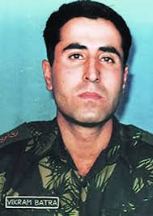

It’s been more than twenty years since kargil war,
The soldier took the advertising slogan and elevated it to a motto for life.
Kargil was a long drawn out battle, a tenacious combat that was a fight to the finish.
As the whole nation waited with bated breath, the Indian flag firmly fluttered over Tiger Hills on the morning of July 4, 1999 and all of India celebrated.
Operation Vijay was successful.
captain vikram batra
It’s been more than twenty years since kargil war,
but the unparalleled courage and sacrifice of Kargil heroes are still etched in the collective memory of the country.
Among these many bravehearts was a man who would become the face of every young Indian soldier who died fearlessly.
This is the tribute to Param Vir Chakra awardee Vikram Batra, the courageous soldier whose actions in the battlefield transcended heroism.
Captain Vikram Batra sacrificed his life fighting Pakistani forces during the Kargil War in 1999, at the age of 24.
He was given the highest wartime gallantry award Param Vir Chakra posthumously.
Captain Batra became the face of the Indian soldier at Kargil, whose words reverberate even today -
'Yeh Dil Maange More..'
The soldier took the advertising slogan and elevated it to a motto for life.
Kargil was a long drawn out battle, a tenacious combat that was a fight to the finish.
As the whole nation waited with bated breath, the Indian flag firmly fluttered over Tiger Hills on the morning of July 4, 1999 and all of India celebrated.
Operation Vijay was successful.
captain vikram batra
 ;
;